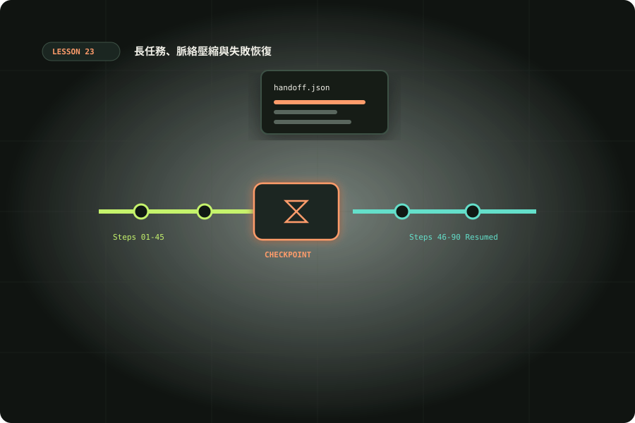

長任務、脈絡壓縮與失敗恢復
建立檢查點、可核對的交接與恢復策略，延續跨會話工作。

準備與學習成果
開始前準備
- 完成06、08、21；Python3.10+；Git可用
完成後你能
- 區分resume/fork/compact與檔案恢復
- 建立可核對的checkpoint與交接
- 偵測版本漂移並縮小失敗範圍
兩小時實作安排
時間包含閱讀、操作、修正與驗收；不是純閱讀時間，也不是工具執行時間保證。
長任務的瓶頸常在可延續的狀態
大型任務不只需要更多token，也需要知道哪個結論仍有效。脈絡包含目標、規則、檔案、工具結果與歷史；塞入大量不相關日誌會遮住重要約束。從第08課的遠端工作進一步，把任務拆成可驗收階段，每階段留下輸入、改動、證據與下一步。脈絡壓縮可以減少歷史負擔，卻不能保證所有細節完整留下；檔案現況才是繼續工作的依據。對高價值限制與結論另外留下短文件，避免完全依賴模型記憶。學習時間包含一次中斷演練，不需要真的把模型用到脈絡上限；你要練的是恢復方法，而不是比較誰能聊最久。
續接、分岔與壓縮各解決不同問題
CLI以codex resume SESSION_ID續接既有互動session，codex fork SESSION_ID建立分岔；第21課非互動任務用exec resume。它們保留或延續對話，不等於幫你複製目前工作樹或回滾檔案。CLI commands可核對命令；App的 /compact、/fork 與 /status 依入口與存取而異，見App slash commands。不要把App指令表當作每個CLI版本的承諾，先看當前/清單及help。--last在同一目錄有多任務時可能續錯工作，用明確ID較可追蹤。session資料有私有內容，不分享整份歷史作為交接；先保留最小必要摘要與可核對來源。
codex resume --help
codex fork --help
# 替換為自己的互動session ID；這是可選模型操作
codex resume SESSION_ID交接文件：現況、證據、下一步
交接至少包含目標、目前狀態、已改檔案、仍有效約束、未解問題、最後實際驗證及下一個動作。記錄HEAD與輸入雜湊，讓接手者辨識版本漂移；完成狀態與作者聲稱分開，未跑檢查寫null。每項「通過」附命令、環境、退出碼與輸出位置；每項「受阻」說明缺少資訊或權限。摘要不用複述所有探索，已放棄方案只有在影響決策時才保留。把「繼續完成」改成「先重跑報告驗證器，核對兩筆拒絕原因」，能避免重新發散。若要跨人交接，絕對本機路徑改成repo相對位置與環境說明，不把token一起帶走。
離線 lab：檢查交接是否過期
下載 handoff.py、test_handoff.py 與 task.txt。工具讀取檔案hash、Git HEAD與status，產生外置checkpoint；它不是Git備份，不能恢復已失去內容。以下從專案根目錄操作，snapshot的manifest必須放在checkpoint root之外，避免它自己改變Git status。fixture不是Gitrepo時HEAD/status為null，正確反映未取得證據，不冒充Git快照。check返回fresh只表示指定檔案與可觀察Git狀態一致，不證明全部依賴、網路與工具環境相同。先跑snapshot與check，再在副本修改task.txt，預期check非零且列changed。
python3 examples/23/handoff.py snapshot --root examples/23/fixture --manifest /tmp/codex-checkpoint.json
python3 examples/23/handoff.py check --root examples/23/fixture --manifest /tmp/codex-checkpoint.json
python3 examples/23/test_handoff.py恢復前先確認現場，不立即大改
換session後先核對repo、branch、HEAD、dirty檔案、輸入hash與使用者最新要求。checkpoint不一致不是自動回復許可，而是提示有人改過現場；先讀diff再決定更新交接、隔離練習或重新驗證。變體在暫存副本刪除檔案、加入../路徑或symlink，工具應拒絕或報差異。真正Git練習要檢查tracked與untracked內容；單純status相同不代表內容相同，因此重要輸入用hash。已核對後從下一步唯一動作開始，避免同時修多個未知問題。若缺工具或權限，保留狀態等待合理處理；不要因曾在上一個session成功，就假設目前環境也有相同能力。
讓checkpoint與工作紀錄各司其職
checkpoint收集機械可核對狀態，handoff正文記錄人能理解的決策。SHA-256可以發現bytes不同，無法解釋差異是否合理；Git status可指出檔案狀態，未追蹤檔案內容不會因此自動保留。fixture沒有Gitrepo，測試先驗證hash與路徑；若要練HEAD變動，另在暫存Gitrepo做本機commit再核對，不在正式專案回退。manifest內的goal/constraints/next是合成範例，使用自己的任務時要更新，否則機械檢查通過仍可能續做錯誤目標。不要把敏感資料內容寫到共享交接文件，優先記相對位置與必要摘要。
失敗處理：停止、保留、縮小與重驗
看到大面積測試失敗或改錯目錄，先停止繼續寫入，保存diff與錯誤紀錄。不要以git reset --hard、clean或force push作預設恢復；它們可能移除尚未備份的使用者工作。教材建議在隔離副本演練，回復只對確認來源、範圍與授權的內容進行。將失敗分類為環境、需求理解、程式、資料或權限，再提出一個較小假設。暫時故障有限重試，寫過結果的流程先查重；未通過驗證不能標completed。把根因寫入適當的測試、操作說明或專案規則，不把單次偶發失敗變成所有專案的永久限制。
交接品質也要用實際接手檢查
自己寫交接容易省略熟悉的背景，因此讓接手者先回答：目標是什麼、下一步操作哪個檔案、什麼算成功、哪些動作沒有授權。他若仍需要翻長聊天才能回答，就調整摘要或補上契約連結。給接手者一份故意過期的manifest，觀察是否先停下核對現場；再給新版本與確認過的下一步，測能否完成一個小動作。若沒有真實接手者，自己隔一段時間按README重跑也可以，但記錄為自我檢查，不稱獨立評審。量化時記缺失資訊與恢復耗時，不用主觀覺得很順就推論效率改善。
多代理交接與恢復成本
分工時，每個子任務要有檔案範圍、產物與驗收，不只角色名稱。主代理核對成果與整合點，再更新總交接；子代理說完成不代表已合併或可建置。共享工作區通常不是檔案系統隔離，應避免同時寫同一檔案。交接包要記錄哪組檢查由誰執行、與當前版本是否一致；不要將上一版本通過結果套到新diff。擴展題是讓第二個人只讀摘要與checkpoint接手，記錄他仍缺哪些資訊，再調整摘要。將找回現場的時間與實際修復時間分開，能衡量這套交接是否有幫助，但一次練習不代表普遍省時率。
擴展與證據抽查
工具限制：目前checkpoint不檢查manifest簽章或外部依賴，也不能證明交接檔未被竄改。正式協作要從可信的版本庫取得交接契約，再核對hash；不要拿外部郵件附件中的manifest當成命令來源。指定檔案清單應包含真正重要的輸入與規則，漏列檔案就可能有假fresh。復原演練先複製fixture到暫存目錄，改動後保留兩份checkpoint與差異理由，不修改原教材檔再忘記還原。
交辦、變體與驗收
先讓 Codex 讀輸入與契約，列出預期結果，再操作與核對。保存正常與失敗紀錄；模型尚未執行的步驟應寫「未觀察」。把環境、命令、輸入、結果與仍待確認的限制一起交付，讓接手者能在另一個乾淨目錄重現。不要只提交一張成功畫面或一句全部通過。
情境判斷
驗收與完成
官方與第一手來源
範例與操作安排由本站整理。查證日期：2026-10-10；版本、帳號與本機環境不同時，請核對原始文件。